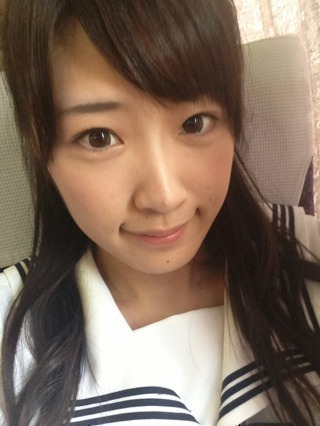
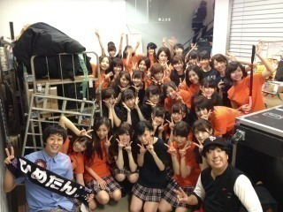

2013/0827Tue（´-`）.｡oO(か ずみん×210

さゆりん♡お誕生日
オメイジングヽ(´>∀<`*)ﾉ
今日は大阪ライブ！
お疲れ様でしたー( ∩ˇωˇ∩)
初めてゲーム負けた〜(´-ω-`)
足が痛いよ〜笑
つってるなう(σ´∀｀)σ
でもめっちゃ盛り上がってくださって
嬉しかった＼(^o^)／アメイジング！！
ホンマに
ありがとうございました(*∩ω∩)
昨日の乃木どこ、
見れなかったのですがご当地の
やつだったのかな(*ﾟρﾟ)？
私は千葉県大好き人間です♪笑
あっ(*ﾟﾛﾟ)!!
告知が遅くなりましたが、
10月に千葉県の館山市で伏姫祭りが
あって、それの伏姫役で
お祭りに参加させていただくことに
なりました(っ*´x`)っ
イェイ♪♪
ぜひ足を運んでみてください(´∀｀∩
また近くになったらお知らせします☆

日村さん...来てくださって
ありがとうございました♡(´;ω;`)
日村さんの後輩の方もきてくださいました！
ありがとうございました！
今日もじょーさんとオソロ♪
ツインだよ！！
割とロリ要素ない2人がツインだよ！笑
じょんは2部にハーフツインしてたけど
ただただ可愛くて
弄りづらかったなσ('д'o)笑
ちなみに私の着ている
さゆみんTシャツはスタッフさんから
プレゼントでいただきました(*´ω`*)
よしっ！明日、名古屋ライブも
続けて頑張るぞー(｀･ω･´)b
おやすみなさい...☆
あ、よかったらNOGIBINGOも
見てね(っ'ヮ'c)♪
ではでは！
2013/08/27 23:12


コメント(458)
LIVE楽しかった！
あめいじーーーんぐ
けい
お疲れ様です。ヽ(●´∀｀●)ﾉ
名古屋なう
NOGIBINGOまだやってません！
はたして名古屋でやるのだろうか？
SKEの二期生の番組やってたけど…
明日のライブ楽しみっす
初参戦です！
バツイチマキシムくん(^^)v
最高だった
今日名古屋行きます
かずみん大好きです！
ライブがんばってください！
地元では、甘太郎です。
伏姫おめでとう。
元気そうで、楽しそうで良かった。
ライブが続くけど頑張ってね！
東京は全力で応援＆楽しみに行くぜ～！！！
めっちゃ近くでよかったー
やばいくらい盛り上がったし
楽しかったよー！
また難波、いや。
大阪城や京セラ来てください！
その方がもっと盛り上がれる気がする。
とにかく、楽しかったわー
またあいにいくからなー
まっちょれい！笑
15のアメイジング＼(^o^)／
ひょうたんクイズも、甘太郎もくっそ笑った。
埼玉県に住んでて同じ関東に住んでるのに違いすぎて面白かった笑
千葉アメイジング！！！
ライブおつかれさまー！
千葉好きはビンビン伝わってきたよ♪
明日もライブ頑張ってね！
ノギビンゴ楽しみだわ♪ヽ(´▽｀)/
昼、夜ともほんまに楽しい最高のliveでした！
かずみんのアメイジング良かったで～(^_^)v
昼の最後のさゆりんは感動でしたね☆
大阪お疲れさま！
ツインテールかわいい(^∀^)
かずみんの地元と会いかものロケ地ってもしかしてめちゃ近い？
名古屋も楽しんでね！
それじゃまぁたぁなぁー！
昼、夜見たけど、昼公演のツインのかずみん、一瞬誰か分からなくて。ごめんなさい。
本当に大阪公演盛り上がりましたね。
アメイジングでした。
明日は名古屋と連ちゃんですね。
大阪でのライブ最高でした。
盛り上げてくれて本当にありがとうございました。
ライブお疲れ様♪
てか、ツインめっちゃ似合ってて可愛Eじゃん♪
明日のライブ頑張ってね！
じゅんこです。
かずみん、大阪でのライブお疲れ様。
大阪も無事に終わって良かったー(*^o^*)
本当にお疲れ様！
明日も名古屋でライブ頑張ってね(*^-^*)
応援してる！
かずみんのツイン初めて見たかも(*^o^*)
めっちゃ似合ってるし可愛い♡♡
じょーさんとおそろいのツイン！！
じょーさんも似合ってて可愛い♡
かずみん、これからも大変だと思うけど頑張って下さい。
かずみん大好きー♡♡
昼夜いたよー！
気づいてくれたかな？笑
個別でいっぱい話しよー！
むっちゃ楽しかった！！
漕げ！バイシクル！めっちゃ笑ったでww
ほんま楽しかったーo(^▽^)o！！
連日LIVEで疲れてると思うけど頑張ってねー！
今日のライブもお疲れ様でした！
大阪と名古屋いけません。
東京もまだいけるかわかりませんが
行けるように頑張ります！
体調に気を付けて明日もがんばってください！
さゆりんは14歳になったのかな??
そうだよね！笑い
かずみんもジョーさんも可愛い♥
かずみんだいすきーっ！
こんばんは♪
大阪ライブお疲れ様でした(*^^*)
明日も頑張ってください(^-^)/
では、お休みなさい(-.-)Zzz・・・・
めっちゃ楽しかったわー
かずみんが自転車漕いでる顔めっちゃ面白かった(笑)
まいやんがかずみんの真似した時、びっくりするぐらい似てたわー
今年中にまた難波でライブしてほいしなー
その日まで楽しみにしとくわー
んじゃ、今日はゆっくり休んでやー
おやずみ かずみ( ´ ▽ ` )ﾉ
千葉県LOVE。
ツインめっちゃかわいいです♡
乃木どこも最高でした♡
NOGIBINGOみますo(｡'▽'｡)o
これからもファイトです！
めっちゃ楽しかった。
次は日曜日に！
大阪ライブ、すごく盛り上がったって聞いたよ(ヽ´ω`)
行きたかったなー(((っ･ω･)っ
明日の名古屋も頑張ってね！！
それにしてもかずみんツインが可愛すぎて！！！(っ´ω`c)♡
ほんとかずみんのツイン好きだぁ＼('ω' )／＼('ω' )／
もちろんNOGIBINGOみるよーっ！
伏姫祭りも楽しみにしてるね〜('-^*)b
ではではおやすみなさい（´-`）.｡oO
ライブお疲れ様(*^_^*)
昼公演行ったよ。かずみんを常に見れたしめっちゃ盛り上がれて楽しかったよ♪
地元のお祭りイベント参加おめでとう。頑張ってね。
ライブめっちゃ楽しかったし、また早く行きたいなぁ。
元気もらえたし明日からまた仕事頑張るね！
明日の名古屋も頑張ってね！！
お疲れ様です
大阪行きたかった～
かずみんかわゆす
お疲れ様です(￣▽￣)
10月に千葉に行ってみます(^ ^)笑
さゆりんごも21歳とかありへんわwww
絶対年下見えるよ笑笑
まあ明日も頑張って下さい（＾ω＾）笑
岩手の山ちゃん
伏姫祭り行けるかなぁ…歴メン(歴女の男ver.)としては勉強して行きたいところだ！
初罰ゲームお疲れ様f^_^;
残り名古屋もガンバレ！ 東京で待ってるぜぜぜぜぜぃ(笑)
名古屋も頑張ってくださいo(^▽^)o
NOGIBINGO絶対みます‼
かずみん可愛いすぎ〜（≧∇≦）
アメイジング＼(^o^)／
バケラッタ＼(^o^)／
大阪ライブお疲れ様でしたo(^∇^o)(o^∇^)o
かずみんのツインテール可愛い(*^^*)
運営ブログにツインテールのかずみんが、めっちゃ可愛いく写メ載ってた♪♪
毎回全力のライブで２公演２日連続大変だろうけど、声援をパワーに変えてガジ頑張って(p^-^)p
かずみさん♪
おやすみ(´∀｀)
またね(*・ｘ・)ノ~~~♪
オメイジング、キター(^^)v
そして、じょーさんとオソロ、いいね(*^^*)
あと。2会場、頑張ってね⊿
これからもライブ頑張ってね♪
体調気をつけて！
ツインテール
新しいね
新鮮だわ
日村さん来てたんだ！
じゃあバイバイ
ガゥガゥ(＃｀皿´)
かずみん バケラッタ ＼(^o^)／
そして さゆりん
オメイジングヽ(´>∀<`*)ﾉ
アメイジングはいろいろと応用が効きそうだね 笑
大阪ライブおつかれさま！
クイズコーナーではついに罰ゲームになっちゃったんやね (>_<)
乃木どこ見たよ！
ひょうたんクイズってw
ローカルどころかその学校だけの行事やん！笑
って思ってたら
まさかの さゆりん も知ってるっていうミラクルでびっくりした ∑(ﾟДﾟ)
伏姫役頑張ってね！
千葉まで見に行くことはできそうにないけど、応援してます (=ﾟωﾟ)ﾉ
じょーずー でのツイン…
たしかにロリ要素は皆無かも…笑
明日の名古屋も楽しんできてね ♫
NOGIBINGOもリアルタイムでは無理だけど見るねー *\(^o^)/*
ゆう。です、
大阪、お疲れ様でした、
続けての
名古屋も、
がんばってね！
伏姫祭、行くよ！
乃木どこの、
ひょうたんクイズの先生が、
大阪の、さゆりんの所に居てよかったよかった
バケラッタ
では、
NOGIBINGO見ます。
ライブ行きたかった(￣ー￣)
かわいい(*^^*)
ツインいいですね(^0_0^)
日村さん来てくれてよかったですね(^人^)
無理し過ぎないように、体調に気をつけて明日も頑張ってください(*^o^)／＼(^-^*)
ライブ行ってみたいなーって思いました。
乃木どこ見たよ。
ひょうたんクイズ面白かったです。
自分も自分の住んでいる県や市大好きです。
ツインのかずみんもかわいい。ロリ要素必要なくても、大丈夫。
じょーさんと本当仲良いね。
NOGIBINGO録画して見ます。
名古屋のライブ上手くできるといいね。応援しています。
体調に気をつけてお仕事頑張ってください。
ついに折り返しやね 明日からもがんばよ！
乃木ビン待機なう～
明日も全力ふぁいっと！
伏姫祭りっていうの行きたいですけど…遠いです…。
名古屋のライブ楽しみです笑笑
ツインテールのかずみんカワイすぎですよ!!!!正確にはツインテール【も】カワイすぎ！ですね\(//∇//)\
ほんとライブ行きたかったです。次は！次こそは行きますよ！
できれば広島きて欲しいですねw 牡蠣食べに来てください!!!!
わがままいってごめんなさいw
では、明日のライブも全力で頑張って下さい!!!!応援してます!!!!
かずみんの最後の生駒ちゃんとのアメイジング最高だった（笑）
絶対また来てね！
ビンゴなうー！笑
なーちゃんとの写真ー(￣▽￣)
LIVE楽しみすぎる！
オレンジと紫にしたわ！
サイリウムな！
でわでわ
かずみん大阪お疲れさん。
かずみんが千葉のどこか知らないけど船橋はひょうたんって聞いたことないよ。
きっとれなりんも同じはず。せっちゃんはどうんだろね。
日村さんの後輩の方はひめたん推し！？ひめたーん。
かずみんカワイイ写メありがとねー！
名古屋も頑張ってねp(^^)
では、バケラッタ。
ライブお疲れ～(^_^)/
かずみんのツインかわいいねヾ(≧∇≦)
明日もライブ頑張ってね(*^_^*)
お疲れ様ーー
かずみんの元気！サイコーー
コメントする